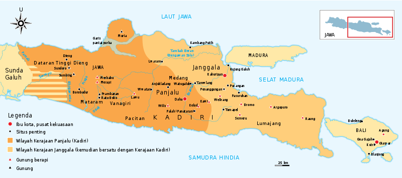
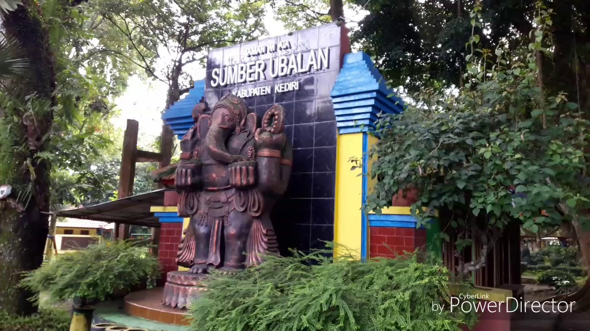
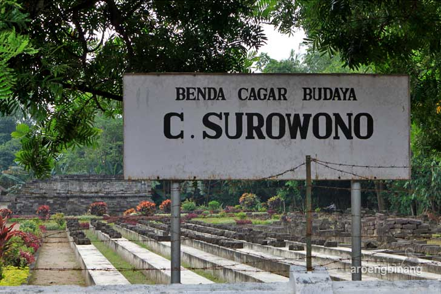
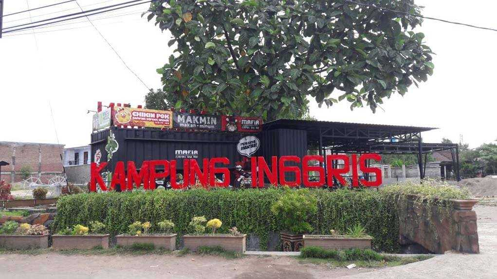
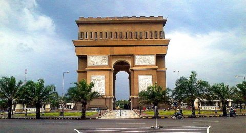

Sejarah

Kata Kediri berasal dari sejarah Kerajaan Kadiri Kerajaan Kadiri atau Kediri atau Panjalu, adalah sebuah kerajaan yang terdapat di Jawa Timur antara tahun 1042-1222.
Kerajaan ini berpusat di kota Daha, yang terletak di sekitar Kota Kediri sekarang.
Wilayah Kabupaten Kediri pernah menjadi bagian berbagai kerajaan penting di Pulau Jawa
sejak perpindahan Kerajaan Medang dari tanah Mataram ke timur, menjelang milenium kedua. Kerajaan Kadiri atau Panjalu, dengan lokasi kraton di Daha kemudian menjadi penerus kerajaan Medang
setelah pembagian wilayah sepeninggal Prabu Airlangga. Puncak kejayaann Kediri adalah ketika di bawah pemerintahan Raja Jayabaya, pengaruhnya telah sampai ke Ternate.
Situs Tondowongso, yang ditemukan pada awal tahun 2007 dan berlokasi sekitar 15 km ke timur dari pusat Kota Kediri sekarang, memberikan indikasi merupakan kompleks permukiman penting.
Geografis

Luas wilayah Kota Kediri adalah 63,40 km² atau (6.340 ha) dan merupakan kota sedang di Provinsi Jawa Timur. Terletak di daerah yang dilalui Sungai Brantas dan di antara sebuah lembah di kaki gunung berapi, Gunung Wilis dengan tinggi 2552 meter. Kota berpenduduk 312.000 (2012) jiwa ini berjarak ±130 km dari Surabaya, ibu kota provinsi Jawa Timur terletak antara 07°45'-07°55'LS dan 111°05'-112°3' BT.[7] Dari aspek topografi, Kota Kediri terletak pada ketinggian rata-rata 67 meter di atas permukaan laut, dengan tingkat kemiringan 0-40%
Struktur wilayah Kota Kediri terbelah menjadi 2 bagian oleh sungai Brantas, yaitu sebelah timur dan barat sungai. Wilayah dataran rendah terletak di bagian timur sungai, meliputi Kecamatan Kediri dan Kecamatan Pesantren, sedangkan dataran tinggi terletak pada bagian barat sungai yaitu Kecamatan Mojoroto yang mana di bagian barat sungai ini merupakan lahan kurang subur yang sebagian masuk kawasan lereng Gunung Klotok (472 m) dan Gunung Maskumambang (300 m).
Wisata

Wisata Alam
- Wisata Sumber Air Ubalan di Dusun Kalasan, Desa Jarak, Plosoklaten
- Air Terjun Besuki, di Desa Jugo
- Gunung Kelud di Desa Sugihwaras
- Gua Surowono, di Desa Canggu
- Gua Maria Lourdes Pohsarang, di Desa Semen
- Arung Jeram Sungai Konto, di Desa Siman
- Gunung Ongakan, Ds. Besowo
- Pemandian Alam Corah
- Alas Simpenan

Wisata Sejarah
- Petilasan Sri Aji Joyoboyo, di Desa Menang
- Candi Tegowangi, di Desa Tegowangi
- Candi Surowono, di Desa Canggu
- Situs Tondowongso, di Desa Gayam
- Makam Tan Malaka di Desa Selopanggung

Wisata Pendidikan
- Kampung Inggris, di Desa Pelem & Desa Tulungrejo

Wisata Keluarga
- Simpang Lima Gumul (SLG), di Desa Tugu Rejo
- Argo Wisata Sepawon, di Desa Sepawon
- Pagora di Kediri
- Kampung Anggrek di Ngancar
- Kampung Tebu di Djengkol
- Taman Hijau SLG
- Taman Kilisuci di Barat Masjid Agung Pare
- Alun Alun Taman Ringin Mbah Budho Pare
- Taman Hutan Kota Pelem-Pare

Wisata Religi
- Makam Gus Miek (KH Hamim Tohari Djazuli) di Dusun Tambak, Desa Ngadi, Kecamatan Mojo
- Masjid An-Nur Pare, di Desa Tulungrejo
- Gereja Pohsarang, di Desa Semen